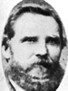

Lorenzo Wesley and Adeline Whiting Roundy Family
Home
Histories
Charts
Photos
Maps
Restricted
News
Info
Contact
| <--(return)-- |   | Shadrach Roundy and Betsy Quimby |
----> |  
| Lorenzo Wesley Roundy  and Adeline Whiting He also married Susannah Wallace  and Prisella Parrish and Prisella Parrish |
|  |
Myron Shadrach Roundy 8 Feb. 1844 - 11 Feb. 1902 Married Mercy Ann Deuel 3 Dec. 1864 The 1st child of Lorenzo Wesley Roundy and Adeline Whiting |
| * | George Whiting Roundy 13 May 1845 - 30 July 1846 The 2nd child of Lorenzo Wesley Roundy and Adeline Whiting |
Back to Buchanan Family History web pages.